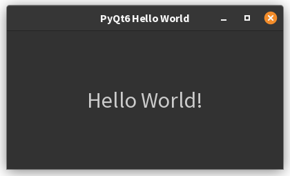

1. Creating Your First GUI Application¶
PyQt6 is a powerful toolkit for developing cross-platform graphical user interface (GUI) applications using Python. It provides Python bindings for the Qt framework, allowing developers to create professional-looking desktop applications that run on Windows, macOS, and Linux platforms. This guide will introduce you to PyQt6 with a simple Hello World application and cover installation procedures.
Installing PyQt6¶
PyQt6 can be installed either through the command line using pip or through the PyCharm IDE interface. Here are
instructions for both methods:
Command Line Installation¶
Installing PyQt6 is straightforward using pip, Python’s package installer. Open your command prompt or terminal
and run the following command:
For Mac users, you might need to use pip3 instead:
You can verify the installation by checking the version:
If the command displays version information, PyQt6 is successfully installed[5].
Installing PyQt6 through PyCharm¶
If you’re using PyCharm IDE, you can install PyQt6 through its built-in package manager:
- Open your Python project in PyCharm
- Go to
File > New Project Setup > Settings(orFile > Settingsfor existing projects) - Navigate to
Python Interpretersection - Select the appropriate Python interpreter for your project
- Click the
+icon to add a new package - Search for
PyQt6in the search box - Select
PyQt6and clickInstall Package - Once completed, you’ll see a success message:
Package PyQt6 installed successfully[3]
Alternatively, you can use the Python Packages tool window to install PyQt6. Here’s how you can do it:
-
Open PyCharm and Your Project
Launch PyCharm and open the project where you want to install PyQt6. -
Locate the Python Packages Tool Window
- Look at the bottom or side panel of the PyCharm interface for the Python Packages tool window.
- If you don’t see it, you can open it from the sidebar or via
View > Tool Windows > Python Packages[3][5].
- Search for PyQt6
- In the search bar at the top of the Python Packages window, type
PyQt6[3][5]. - PyCharm will show you the PyQt6 package (and possibly related packages).
- Install PyQt6
- Click on
PyQt6in the search results. - You’ll see an Install button next to the package name. Click it to start the installation[3][5].
- Optionally, you can select a specific version before installing[2][5].
- Verify Installation
- After installation,
PyQt6should appear in your list of installed packages in the same window[3]. - You can now import and use PyQt6 in your project.
Tips
- The Python Packages tool window also allows you to view package documentation, upgrade, or uninstall packages easily[3][4][5].
- Always make sure you have the correct Python interpreter selected for your project to avoid installation issues[1][2].
Your First PyQt6 Application: Hello World¶
Let’s create a simple PyQt6 application that displays a “Hello World” message in a centered label. This basic example will introduce you to the fundamental concepts of PyQt6 programming.
import sys
from PyQt6.QtWidgets import QApplication, QWidget, QLabel, QVBoxLayout
from PyQt6.QtCore import Qt
class MainWindow(QWidget):
def __init__(self):
super().__init__()
# Set window properties
self.setWindowTitle("PyQt6 Hello World")
self.setGeometry(100, 100, 400, 200) # x, y, width, height
# Create a label with text
label = QLabel("Hello World!")
# Set font size for better visibility
font = label.font()
font.setPointSize(20)
label.setFont(font)
# Create layout and add label
layout = QVBoxLayout()
layout.addWidget(label)
# Center the label in the layout
label.setAlignment(Qt.AlignmentFlag.AlignCenter)
# Apply layout to the window
self.setLayout(layout)
if __name__ == '__main__':
# Create the application
app = QApplication(sys.argv)
# Create and show the main window
window = MainWindow()
window.show()
# Start the event loop
sys.exit(app.exec())

Understanding the Code¶
Let’s break down the Hello World example to understand how PyQt6 works:
Basic Structure and Imports¶
import sys
from PyQt6.QtWidgets import QApplication, QWidget, QLabel, QVBoxLayout
from PyQt6.QtCore import Qt
These lines import the necessary modules from PyQt6:
QApplication: The foundation for any PyQt applicationQWidget: The base class for all UI objectsQLabel: Widget for displaying textQVBoxLayout: Vertical layout managerQt: Contains various constants and enumerations[4][8]
Creating the Application¶
This creates a QApplication instance. Every PyQt application must have exactly one QApplication object, which manages
the application’s control flow and main settings. The sys.argv parameter allows the application to accept command-line
arguments, though it’s not necessary for simple applications[4].
Defining the Main Window¶
We create a custom class MainWindow that inherits from QWidget. In the constructor:
- We set the window title and dimensions with
setWindowTitle()andsetGeometry() - We create a
QLabelwidget with the text “Hello World!” - We increase the font size for better visibility
- We create a vertical layout (
QVBoxLayout) and add our label to it - We center the label using
setAlignment() - We apply the layout to our window with
setLayout()[8]
Starting the Application¶
These lines create an instance of our MainWindow, display it on screen with show(), and start the application’s event
loop with app.exec(). The event loop is responsible for processing user interactions and updating the UI[4].
Conclusion¶
This introduction has covered the basics of PyQt6: installation, creating a simple window, and adding a centered label. The “Hello World” example demonstrates the fundamental structure of a PyQt6 application, including:
- Creating an application object
- Setting up a window
- Adding widgets (in this case, a label)
- Arranging widgets using layouts
- Running the application’s event loop
As you continue learning PyQt6, you’ll discover many more widgets and features that allow you to create sophisticated desktop applications. You can build on this foundation to add buttons, input fields, menus, dialogs, and much more.
For beginners just starting with GUI programming, PyQt6 offers a good balance between ease of use and powerful features, making it an excellent choice for Python developers looking to create desktop applications.
References
- [1] https://wiki.qt.io/Qt_for_Python_Tutorial_HelloWorld
- [2] https://discuss.python.org/t/pyqt6-module-not-found/67372
- [3] https://www.youtube.com/watch?v=JXRWwYzeDLc
- [4] https://doc.qt.io/qtforpython-6/tutorials/basictutorial/widgets.html
- [5] https://abhinavtej.hashnode.dev/installing-pyqt6-and-pyside6-on-windows-and-mac
- [6] https://pythonpyqt.com/how-to-install-pyqt5-in-pycharm/
- [7] https://pythonbasics.org/pyqt-hello-world/
- [8] https://www.pythontutorial.net/pyqt/pyqt-qlabel/
- [9] https://www.pythonguis.com/tutorials/pyqt6-creating-your-first-window/
- [10] https://python-qt-tutorial.readthedocs.io/en/latest/1.hello.html
- [11] https://www.youtube.com/watch?v=FoD7MOm4KY4
- [12] https://www.youtube.com/watch?v=NU3DQwMKz00
- [13] https://stackoverflow.com/questions/71491747/pycharm-support-for-pyqt6-on-m1
- [14] https://www.tutorialspoint.com/pyqt/pyqt_qlabel_widget.htm
- [15] https://www.pythonguis.com/installation/install-pyqt6-mac/
- [16] https://discuss.python.org/t/solved-module-pyqt6-not-found/33554
- [17] https://www.pythonguis.com/tutorials/pyqt6-widgets/
- [18] https://pypi.org/project/PyQt6/
- [19] https://youtrack.jetbrains.com/issue/PY-51291/PyQt6-support
- [20] https://stackoverflow.com/questions/21538615/hello-world-in-pyqt
Use of AI
Page written in part with the help of an AI assistant, mainly using Perplexity AI. The AI was used to generate
explanations, examples and/or structure suggestions. All information has been verified, edited, and completed
by the author.